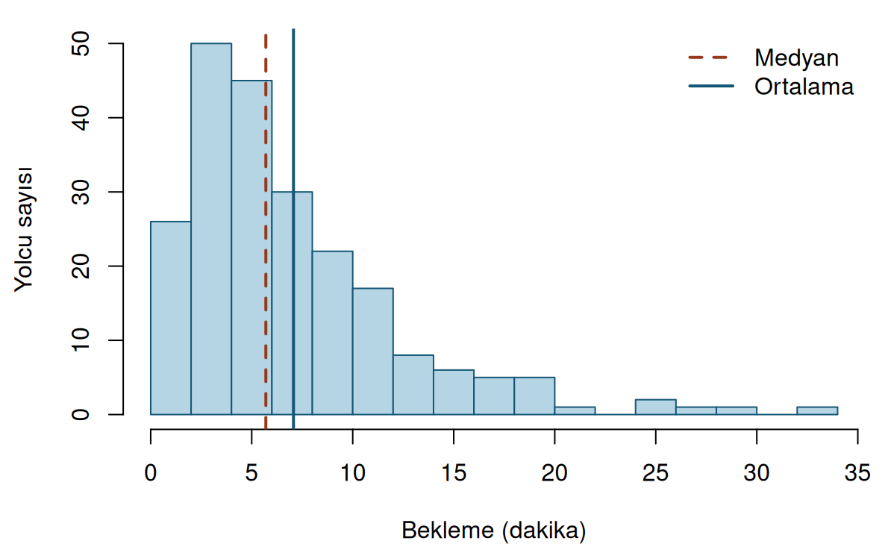
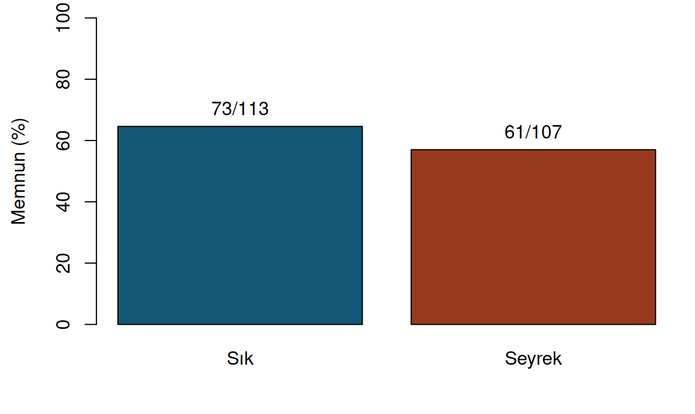
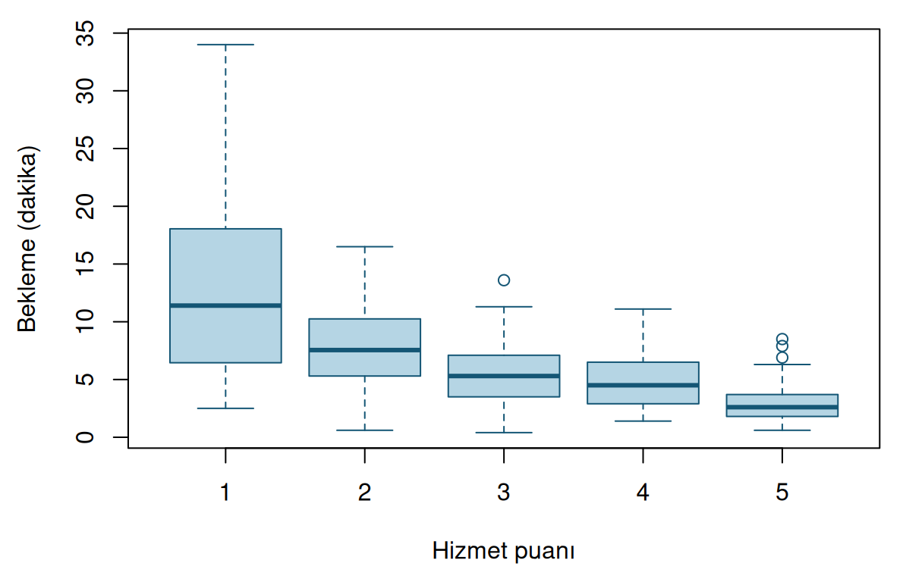

set.seed(510)
n_yolcu <- 220L
metro <- rbinom(n_yolcu, 1, 0.42) == 1
sik <- rbinom(n_yolcu, 1, ifelse(metro, 0.68, 0.45)) == 1
bekleme <- round(rgamma(n_yolcu, shape = 2, scale = ifelse(metro, 2.8, 4.3)), 1)
p_memnun <- plogis(1.25 - 0.12 * bekleme + 0.20 * sik + 0.16 * metro)
memnun_yanit <- rbinom(n_yolcu, 1, p_memnun)
egilim <- 0.8 - 0.13 * bekleme + 0.15 * metro + rnorm(n_yolcu, sd = 0.9)
uretilen_puan <- cut(egilim, c(-Inf, -1.1, -0.35, 0.35, 1.1, Inf),
labels = 1:5, ordered_result = TRUE)
p_eksik <- plogis(-3.1 + 0.11 * bekleme)
puan_eksik <- rbinom(n_yolcu, 1, p_eksik) == 1
gozlenen_puan <- uretilen_puan
gozlenen_puan[puan_eksik] <- NA
yolcu <- data.frame(
yolcu_id = seq_len(n_yolcu),
bekleme_dk = bekleme,
memnun = factor(memnun_yanit, levels = c(1, 0), labels = c("Memnun", "Değil")),
kullanim = factor(ifelse(sik, "Sık", "Seyrek"), levels = c("Sık", "Seyrek")),
hizmet_puani = gozlenen_puan,
hat_turu = factor(ifelse(metro, "Metro", "Otobüs"))
)38 Bütünleşik İstatistiksel Analiz
Bir belediye, yolcuların ne kadar beklediğini ve hizmeti nasıl değerlendirdiğini öğrenmek istiyor. İşletme ekibi ortalama bekleme yükünü izlemek, kullanıcı deneyimi ekibi ise farklı yolcuların memnuniyetini anlamak istiyor. İlk karar, hangi R komutunun kullanılacağına ilişkin değildir. Ekiplerin hangi niceliğe dayanarak karar vereceğini belirlememiz gerekir. Bölüm 29 bölümündeki soru, veri ve çıkarım zincirini bu kez baştan sona tek bir araştırmada kuracağız.
38.1 Soruları analizden önce planlamak
Kapsamı belirli bir dönem ve hizmet ağı içindeki yolcular olarak düşünelim. Bir yolcu, belirlenen dönemdeki son yolculuğuna ilişkin bir kayıt verir. Son yolculuk ölçümü, bu yolcuların bütün yolculuklarının ortalamasını hedeflemez. Örneğin durakta yakalanan yolcularla yapılan bir araştırma, sık seyahat edenleri daha kolay seçebilir. Örnekleme çerçevesi ve birimin tanımı, Bölüm 32 bölümünde gördüğümüz gibi, sonuçların kime taşınabileceğini belirler.
Üç birincil soru ve analiz kuralı veri üretilmeden belirlenir (Diez vd. 2019; Ismay ve Kim 2020).
- Ortalama bekleme kaç dakikadır? Hedef, modeldeki tüm yolcuların son yolculuğundaki bekleme süresinin anakütle ortalamasıdır. Örneklem ortalaması, standart hata ve iki taraflı %95 t aralığı kullanılacak. Çarpıklık karşısında ayrı bir yüzdebirlik bootstrap aralığı ile duyarlılık kontrol edilecek.
- Sık ve seyrek kullanıcıların memnuniyet oranları ne kadar farklıdır? Hedef sık eksi seyrek memnuniyet oranı farkıdır. Grup oranları, yüzde puan cinsinden fark ve bağımsız oranlar için yaklaşık %95 aralık raporlanacak. Beklenen hücre sayıları yeterliyse yönsüz alternatif için Pearson bağımsızlık testi kullanılacak. Seyrek 2×2 tabloda Fisher’ın koşullu testi değerlendirilecek.
- Bekleme ile hizmet puanı nasıl birlikte değişir? Hedef monoton sıra ilişkisidir. İlk raporun hedef kitlesi puan veren yolculardır. Spearman katsayısı, bağlı sıralar için yaklaşık iki taraflı p-değeri ve gözlem çiftlerini yeniden örnekleyen %95 bootstrap aralığı raporlanacak. Puanların tüm yolcularda görülebildiği sentetik karşılık, duyarlılık için kullanılacak.
İlk soru tahmine yöneliktir ve bir sıfır hipotezi gerektirmez. İkinci ve üçüncü soruların p-değerleri ayrı ayrı verilir. Aralıklar soru başına %95 düzeyindedir. Bu analiz üç soruyu beraber doğrulayan bir aile düzeyi hata iddiası kurmaz. Belediye pratik önem için örneğin beş yüzde puanlık bir memnuniyet farkı belirleyebilir. Burada bu eşik, sonuçları okuma örneğidir ve veri görüldükten sonra test sınırı olarak kullanılmaz (Wasserstein vd. 2019).
38.2 Veri sözlüğü ve üretim süreci
Her satır farklı bir yolcunun son yolculuğunu anlatır. Bekleme ile puan aynı yolcuya ait bir çifttir. Sık ve seyrek grupları farklı kişilerden oluşur. Bir yolcunun birden fazla yanıtı olsaydı bu satırları bağımsız saymak, standart hataları ve test referanslarını etkileyebilirdi.
| Değişken | Ölçek ve birim | Anlam, rol ve eksiklik |
|---|---|---|
| yolcu_id | Kimlik | Kayıt birimini tanır. Tam. |
| bekleme_dk | Sayısal, dakika | Durakta bekleme. İlk sorunun sonucu ve üçüncü sorunun bir bileşeni. Tam. |
| memnun | İkili | Genel memnuniyet yanıtı. İkinci sorunun sonucu. Tam. |
| kullanim | İkili | Haftada en az üç gün kullanım sık sayılır. İkinci sorunun grubu. Tam. |
| hizmet_puani | Sıralı, 1–5 | 1 en düşük, 5 en yüksek hizmet değerlendirmesi. Bazı yanıtlar eksik. |
| hat_turu | İkili | Son yolculuğun otobüs veya metro olduğu. Grup bileşimini anlamaya yardım eder. Tam. |
Puan 4 ile 5 arasındaki farkın 1 ile 2 arasındaki farka eşit olduğu varsayılmaz. Sıra analizi için kategorilerin yönü yeterlidir. Memnuniyet ayrı bir ikili yanıt olarak üretilir. Beşli puanı sonradan bir eşikle ikiye ayırarak oluşturulmaz.
220 bağımsız sentetik yolcu üretiyoruz. Metro olasılığı 0,42. Sık kullanım olasılığı metroda 0,68, otobüste 0,45. Bekleme sağa çarpık Gamma dağılımından geliyor. Biçim parametresi her iki hatta 2, ölçek metroda 2,8, otobüste 4,3 dakika. Beklemeyi onda bir dakikaya yuvarlıyoruz. Daha uzun bekleme, memnuniyet olasılığını ve gizli değerlendirme eğilimini ortalamada düşürüyor. Hat türü ve kullanım sıklığı memnuniyet olasılığına da katkı yapıyor. Puan için gürültülü eğilimi önceden belirlenmiş dört eşikle beş sıraya ayırıyoruz. Aynı bekleme süresinde farklı puanlar mümkün.
Puanın eksik olma olasılığı bekleme arttıkça yükselir. Bu mekanizmada eksiklik, gözlenen bekleme süresi verildiğinde gizli puana ayrıca bağlı değildir. Gerçek araştırmada böyle bir mekanizmayı veriden tek başına doğrulayamayız. Kod, aynı bağımsız üretim mekanizmasını ve tohumu kullanır. Gerçek belediye anketinin yolcuları temsil etmesi için kapsam, seçilme olasılıkları ve yanıt süreci ayrıca incelenmelidir.
Bölüm 31 bölümündeki dağılım ayrımı bu üretimde somutlaşır. Gamma dağılımı bekleme süreleri için pozitif değerler ve sağ kuyruk üretir. Bernoulli çekilişleri ise her yolcu için iki olası yanıt üretir. Lojistik dönüşüm, doğrusal ifadeyi 0 ile 1 arasında bir memnuniyet veya yanıtsızlık olasılığına taşır. Bu dönüşümler burada yalnız veri üretimi içindir. Veriye bir tahmin modeli uydurmuyoruz. Tohum ve üretim kuralları analiz çıktısına göre ayarlanmaz.
38.3 Testlerden önce veri kalitesi
Her kayıt için kimlik, ölçüm birimi ve mantıksal sınırları kontrol ederiz. Bölüm 15 ve Bölüm 16 bölümlerindeki ilkeleri burada araştırma akışına uygularız. Büyük bir bekleme, aktarma veya sefer aksamasını yansıtabilir. Kaynak kayıt ve ölçüm birimi üzerinden kontrol edilir. Tek başına büyük olması dışlama gerekçesi değildir.
str(yolcu)'data.frame': 220 obs. of 6 variables:
$ yolcu_id : int 1 2 3 4 5 6 7 8 9 10 ...
$ bekleme_dk : num 4.7 2.5 12.5 8.5 9.1 10.7 9.9 5.9 2.2 4.3 ...
$ memnun : Factor w/ 2 levels "Memnun","Değil": 1 1 2 1 2 2 2 2 1 1 ...
$ kullanim : Factor w/ 2 levels "Sık","Seyrek": 2 2 2 1 1 2 1 2 2 1 ...
$ hizmet_puani: Ord.factor w/ 5 levels "1"<"2"<"3"<"4"<..: 3 2 1 5 NA NA 3 3 5 4 ...
$ hat_turu : Factor w/ 2 levels "Metro","Otobüs": 1 2 2 1 2 2 2 2 2 1 ...colSums(is.na(yolcu)) yolcu_id bekleme_dk memnun kullanim hizmet_puani hat_turu
0 0 0 0 18 0 c(kayit = nrow(yolcu), tekrar = anyDuplicated(yolcu$yolcu_id),
gecersiz_sure = sum(!is.finite(yolcu$bekleme_dk) | yolcu$bekleme_dk < 0)) kayit tekrar gecersiz_sure
220 0 0 table(yolcu$hat_turu, yolcu$kullanim)
Sık Seyrek
Metro 61 35
Otobüs 52 72table(yolcu$hizmet_puani, useNA = "ifany")
1 2 3 4 5 <NA>
31 40 53 41 37 18 Tekil kimliğin bulunması, veri girişindeki bir tekrarı denetler. Gerçek araştırmada aynı güzergâh ve seferdeki yolcuların ortak gecikmeye maruz kalması gibi bağımlılıklar kimlik kontrolüyle ortaya çıkmaz. Bu örnekte bağımsızlık üretim tasarımından gelir.
38.3.1 Eksik puanın hangi analizleri etkilediği
İlk iki soru bekleme ve memnuniyet değişkenlerini kullanır. Bu değişkenleri tam olan yolcular puan vermedi diye çıkarılmaz. Üçüncü soruda ise yalnızca bekleme ve puanı birlikte gözlenen yolcular kullanılabilir. Eksik puanları düşük, yüksek veya nötr kategori diye kodlamak sıraları ve hedefi değiştirir.
var_puan <- !is.na(yolcu$hizmet_puani)
puanli <- yolcu[var_puan, ]
eksik_grup <- with(yolcu, table(kullanim, Puan = ifelse(var_puan, "Var", "Eksik")))
eksik_grup Puan
kullanim Eksik Var
Sık 7 106
Seyrek 11 96round(100 * prop.table(eksik_grup, 1), 1) Puan
kullanim Eksik Var
Sık 6.2 93.8
Seyrek 10.3 89.7tapply(yolcu$bekleme_dk, var_puan, median)FALSE TRUE
10.9 5.5 Kullanım grubuna göre hem ham sayıyı hem yüzdesini okuruz. Puanı olanlarla olmayanların bekleme medyanları, üçüncü analizin hangi yolcuları daha az yansıtabileceğini gösterir ve eksikliğin nedenini tek başına kanıtlamaz. Yanıt verenler arasındaki sıra ilişkisini doğrudan betimleyebiliriz. Tüm yolculara genellemek için yanıtsızlık hakkında ek koşullar gerekir. Eksikliğin sadece gözlenen bekleme süresine bağlı olduğu bu senaryoda bile, yanıt verenlerin bekleme dağılımı değiştiğinden marjinal sıra korelasyonu değişebilir.
38.4 Keşif: Üç sorunun veri görünümü
Önce beklemenin ortalamasını, medyanını, çeyreklerini ve standart sapmasını inceleriz. Ardından gruplar için doğru paydalarla oranları ve sıralı puan düzeylerine göre beklemeyi çizeriz. Grafikler dağılımı ve analiz varsayımlarını değerlendirmek içindir. Önceden belirlenen soruları grafiklerde en kuvvetli görünen örüntüye göre değiştirmeyiz.
sure <- yolcu$bekleme_dk
bek_ort <- mean(sure)
bek_sd <- sd(sure)
bek_ozet <- c(ortalama = bek_ort, ss = bek_sd, quantile(sure, c(.25, .5, .75)))
round(bek_ozet, 2)ortalama ss 25% 50% 75%
7.07 5.46 3.38 5.70 9.33 memnun_tablo <- with(yolcu, table(kullanim, memnun))
grup_n <- rowSums(memnun_tablo)
grup_pay <- prop.table(memnun_tablo, 1)[, "Memnun"]
puan_sira <- as.integer(puanli$hizmet_puani)Şekil 38.1’deki sağ kuyruk, az sayıda uzun beklemenin ortalamayı yukarı çekebileceğini gösterir. Bölüm 30 bölümündeki ortalama ve medyanın farklı işlevleri burada önemlidir. Medyan tipik yolcuyu betimler. Ortalama, kişi başına toplam bekleme yüküyle ilişkilidir.
par(mar = c(4, 4.3, 1, 0.8), bg = "white")
hist(sure, breaks = "FD", col = "#B5D5E4", border = "#145675",
xlab = "Bekleme (dakika)", ylab = "Yolcu sayısı", main = "")
abline(v = c(median(sure), bek_ort), lty = c(2, 1), lwd = 2,
col = c("#97391C", "#145675"))
legend("topright", c("Medyan", "Ortalama"), lty = c(2, 1),
col = c("#97391C", "#145675"), lwd = 2, bty = "n")
Şekil 38.2 her kullanım grubunun kendi paydasını kullanır. Çubuklar eşit büyüklükte örneklem varsaymaz. Frekans etiketleri bu ayrımı görünür kılar.
par(mar = c(4, 4.3, 0.8, 0.8), bg = "white")
konum <- barplot(100 * grup_pay, ylim = c(0, 100),
col = c("#145675", "#97391C"), ylab = "Memnun (%)")
text(konum, 100 * grup_pay, paste(memnun_tablo[, "Memnun"], grup_n, sep = "/"), pos = 3)
Şekil 38.3 bekleme sürelerini beş puan düzeyi için yan yana gösterir. Kutular ortadaki %50’yi, iç çizgiler medyanı gösterir. Noktalar, R’nin kutu grafiği kuralında bıyıkların dışında kalan gözlemlerdir. Bu işaretleme kayıt dışlama kuralı değildir. Dağılımlar örtüştüğü için aynı puanın farklı sürelerle birlikte gözlendiğini de görebiliriz.
par(mar = c(4.6, 4.4, 1, 0.8), bg = "white")
boxplot(bekleme_dk ~ hizmet_puani, data = puanli, col = "#B5D5E4",
border = "#145675", ylab = "Bekleme (dakika)", xlab = "Hizmet puanı")
38.5 Birinci analiz: Ortalama beklemeyi tahmin etmek
Araştırma hedefi ortalamadır. Sağa çarpıklık medyanın da raporlanmasını yararlı kılar. Ortalama tahmini için örneklem ortalamasının dağılımı önemlidir. Bağımsız gözlemler ve sonlu varyans altında, Bölüm 32 bölümündeki merkezi limit teoremi bu büyüklükte bir örneklem için bir dayanak sağlar. Gamma karışımında tek tek süreler normal dağılmaz. Bu nedenle kullanılan t aralığı model altında yaklaşıktır (Casella ve Berger 2002).
\(S\) örneklem standart sapması ve \(n\) analizdeki yolcu sayısı olsun. Standart hata \(S/\sqrt{n}\) ile tahmin edilir. Bölüm 33 bölümündeki iki taraflı t aralığında bu standart hata ile \(n-1\) serbestlik dereceli t dağılımının 0,975 kesim noktası çarpılır.
bek_sh <- bek_sd / sqrt(length(sure))
bek_ga <- bek_ort + c(-1, 1) * qt(0.975, length(sure) - 1) * bek_sh
round(c(ortalama = bek_ort, standart_hata = bek_sh, bek_ga), 3) ortalama standart_hata
7.068 0.368 6.342 7.794 Bu aralık anakütle ortalamasının tahmin belirsizliğini gösterir. Tek bir yolcunun ne kadar bekleyeceğine ilişkin tahmin aralığı veya yolcuların %95’inin bekleme aralığı olarak okunmaz. Küçük örneklemde ya da seyrek ama çok uzun beklemeler varsa ortalama için t yaklaşımının kapsaması daha sorunlu olabilir.
38.6 İkinci analiz: Memnuniyet farkı ne kadar?
Bölüm 37 bölümündeki satır koşullu oranları kullanırız. Sık ve seyrek yolcular farklı kişiler olduğu için burada eşleştirilmiş karşılaştırma yoktur. Bölüm 35 bölümündeki tasarım ayrımı geçerlidir ama ikili sonucu yüzde puan cinsinden yorumlarız. Beklenen frekanslar ortak memnuniyet payı ve grup büyüklüklerinden gelir. Tabloda beklenen sayılar yeterli olduğundan düzeltilmemiş Pearson ki-kare referansını kullanıyoruz.
memnun_tablo memnun
kullanim Memnun Değil
Sık 73 40
Seyrek 61 46round(100 * grup_pay, 1) Sık Seyrek
64.6 57.0 fark_pp <- 100 * unname(grup_pay["Sık"] - grup_pay["Seyrek"])
fark_sh <- 100 * sqrt(sum(grup_pay * (1 - grup_pay) / grup_n))
fark_ga <- fark_pp + c(-1, 1) * qnorm(.975) * fark_sh
memnun_test <- chisq.test(memnun_tablo, correct = FALSE)
memnun_test$expected memnun
kullanim Memnun Değil
Sık 68.82727 44.17273
Seyrek 65.17273 41.82727round(c(fark_pp, fark_ga, p = memnun_test$p.value), 3) p
7.592 -5.281 20.466 0.249 Aralık, iki bağımsız grubun tahmini binom varyanslarının toplamını kullanır. Bu Wald yaklaşımının kapsaması, hücreler seyrek veya oranlar uçlara yakın olduğunda bozulabilir. Yeterli beklenen frekanslar ki-kare referansını destekler. p-değeri iki yönlü bir ilişki sorusuna yanıt verir, farkın işareti ve büyüklüğü ise paylardan ve aralıktan okunur. Aralık sıfırı içeriyorsa, veri ve kullanılan model hem sıfıra hem de aralıktaki pozitif ve negatif değerlere izin verir. Reddetmeme kararı denkliğin gösterilmesi değildir (Diez vd. 2019; Wasserstein ve Lazar 2016).
38.7 Üçüncü analiz: Bekleme süresi ve sıralı puan
Bölüm 36 bölümündeki bağlara ortalama sıra verme kuralını kullanırız. Beşli puanın sayısal kodları kategorilerin sırasını taşır. Spearman, puan aralıklarına eşit uzaklık atamadan bekleme ve puan sıralarının birlikte değişimini özetler. Beklemede yuvarlama, puanda sınırlı kategori sayısı nedeniyle bağlar vardır. R’de exact = FALSE açıkça yazılır. p-değeri bağımsız çiftler için yaklaşık sıra testi çıktısıdır. Yalnızca sıfır katsayısı varsayımı, her ortak dağılımda bu referansın geçerliliğini garanti etmez (R Core Team 2025).
Aralık için her tekrarda yolcuları yerine koyarak seçeriz. Böylece bir yolcunun bekleme ve puan ikilisi birlikte kalır. Bölüm 33 bölümündeki yüzdebirlik aralığını yeniden örneklenen katsayılardan hesaplarız. Aralık puan veren akışın belirsizliğini yansıtır. Eksik puanlı yolcuların etkisini kendiliğinden düzeltmez.
sira_test <- cor.test(puanli$bekleme_dk, puan_sira, method = "spearman", exact = FALSE)
rho <- unname(sira_test$estimate)
set.seed(511)
B <- 4000L
rho_boot <- replicate(B, {
indeks <- sample.int(nrow(puanli), replace = TRUE)
x <- puanli$bekleme_dk[indeks]
y <- puan_sira[indeks]
if (length(unique(x)) > 1L && length(unique(y)) > 1L) {
cor(x, y, method = "spearman")
} else {
NA_real_
}
})
gecerli_boot <- sum(is.finite(rho_boot))
rho_ga <- unname(quantile(rho_boot, c(.025, .975), na.rm = TRUE))
c(rho = rho, alt = rho_ga[1], ust = rho_ga[2], p = sira_test$p.value,
gecerli = gecerli_boot) rho alt ust p gecerli
-5.728499e-01 -6.638787e-01 -4.686722e-01 5.191916e-19 4.000000e+03 Bir yeniden örneklemenin tüm puanları ya da süreleri aynıysa sıra korelasyonu tanımsızdır. Geçerli tekrar sayısı bu durumu denetler. Tanımsız sonuçlar sık olsaydı aralığın kararlılığı ayrıca sorgulanırdı. Katsayının negatif olması, daha uzun beklemelerin düşük puanlarla birlikte görülme eğilimini ifade eder. Dakika başına puan kaybı veya nedensel etki ölçüsü değildir.
38.8 Varsayımlar ve duyarlılık
- Tasarım. İlk iki analiz aynı 220 kişiyi kullanır. Gruplar arasında farklı yolcular ve üretimde bağımsız satırlar vardır. Gerçek anketin bir sefer ya da durak içinde kümelenmesi, güven aralıklarının genişliğini değiştirebilir.
- Dağılım. Beklemede sağ kuyruk var. Uzun süreleri koruyarak t aralığına karşı yolcu düzeyinde bootstrap aralığı hesaplarız. Bu karşılaştırma iki aralık yöntemine duyarlılığı gösterir.
- Ölçüm ve örneklem. Grup tablosunda beklenen frekanslar karar kuralına uygundur. Sıra analizindeki bağlar ortalama sıralarla ele alınır. Puanın eksikliği beklemeyle ilişkili olduğu için sentetik tam puanlar yardımıyla hedef kitle değişiminin etkisini inceleyebiliriz.
set.seed(512)
ort_boot <- replicate(B, mean(sample(sure, replace = TRUE)))
bek_boot_ga <- unname(quantile(ort_boot, c(.025, .975)))
rho_tam <- cor(sure, as.integer(uretilen_puan), method = "spearman")
round(rbind(t_araligi = bek_ga, bootstrap_araligi = bek_boot_ga), 2) [,1] [,2]
t_araligi 6.34 7.79
bootstrap_araligi 6.36 7.80round(c(puan_veren = rho, tum_sentetik_yolcular = rho_tam), 3) puan_veren tum_sentetik_yolcular
-0.573 -0.618 İlk karşılaştırmada hedef ortalama ve veri aynıdır. İkinci karşılaştırmada hedef kitle farklıdır. Üretilen ama kayda alınmayan puanlar gerçek bir araştırmada bilinmez. Tam sentetik katsayı burada eksik yanıtın etkisini görmeye yarar ve bir imputasyon yöntemi örneği değildir. Bir örnekte farkın küçük çıkması, benzer eksik verilerin genel olarak önemsiz olduğunu göstermez.
38.8.1 Planlanan sonuçları keşiften ayırmak
Yalnız metro yolcularında bekleme–puan ilişkisinin gücü farklı mı? Sık kullanım eşiği değişirse sonuç değişir mi? Bunlar sonraki araştırma için değerli sorular olabilir. Gözlenen veriden doğan soruları keşifsel olarak kaydedip tüm analizleri raporlamak gerekir. Yalnız küçük p-değeri bulunan alt grubu sunmak, deneyebileceğimiz karşılaştırmaların sayısını gizler ve etkiyi olduğundan büyük gösterebilir. Bir doğrulama araştırmasında grupları, etkileri ve yöntemleri yeni veriye bakmadan belirleriz. Bu senaryoda yeni alt grup testi eklemiyoruz. Üç sorunun tümü, sonuçları ne olursa olsun raporda yer alır (Wasserstein ve Lazar 2016; Wasserstein vd. 2019). Bölüm 34 bölümü bu ayrımın hata oranı ve bilimsel yorum açısından önemini açıklar.
38.9 Bulguları tek raporda birleştirmek
Aşağıdaki özet aynı analiz nesnelerinden üretilir. %95 aralıklar her satırda farklı bir niceliğe aittir. Örneğin bekleme dakikayla, memnuniyet farkı yüzde puanla ölçülür. Katsayı ise birimsizdir. İlk satır bir tahmin sorusuna ait olduğu için p-değeri yoktur.
| Soru | Tahmin | Aralık | p |
|---|---|---|---|
| Bekleme (dk) | 7,07 | 6,34 / 7,79 | — |
| Fark (yp) | 7,59 | -5,28 / 20,47 | 0,249 |
| Spearman | -0,57 | -0,66 / -0,47 | < 0,001 |
Tablo 38.1 tablosunda aralık sütunu alt ve üst sınırları, «yp» yüzde puanı gösterir. Böyle bir tablo hesapların bulunmasını kolaylaştırır. Araştırmanın bağlamı ve sınırları ise metinde açıklanır.
38.9.1 Örnek bilimsel rapor
Amaç. Sentetik bir belediye ulaşım araştırmasında kişi başına son yolculuk beklemesini, sık ve seyrek kullanıcıların memnuniyet farkını ve bekleme ile hizmet puanının ilişkisini değerlendirdik.
Veri ve yöntem. Her biri tek yolculuk bildiren 220 bağımsız sentetik yolcu incelendi. Bekleme ortalaması için t yaklaşımı ve memnuniyet farkı için bağımsız oranların yaklaşık aralığı kullanıldı. Memnuniyet tablosu Pearson ki-kare testiyle değerlendirildi. Sıra korelasyonunda puanı gözlenen 202 yolcunun bağımsız çiftleri kullanıldı. Yolcu düzeyinde yüzdebirlik bootstrap aralığı ve bağları olan çiftler için yaklaşık sıra testi raporlandı.
Bulgular. Ortalama bekleme 7,07 dakika ve %95 aralık 6,34 / 7,79 dakika oldu. Standart hata 0,37 dakika, medyan 5,70 dakikaydı. Bootstrap aralığı 6,36 / 7,80 dakika olup aynı süre ölçeğinde benzer bir belirsizlik gösterdi. Sık grupta memnuniyet %64,6, seyrek grupta %57,0 bulundu. Fark 7,59 yüzde puan, yaklaşık %95 aralık -5,28 / 20,47 yüzde puan ve Pearson testi için p 0,249 idi. Yanıt verenlerde daha uzun bekleme daha düşük puanlarla birlikte gözlendi. Spearman katsayısı -0,573, %95 bootstrap aralığı -0,664 / -0,469 ve yaklaşık p < 0,001 idi.
Sınırlılıklar. Hizmet puanı 18 yolcuda eksikti. Bu kayıtların bekleme medyanı 10,9 dakika, yanıt verenlerde 5,5 dakikaydı. Tüm sentetik puanlarla korelasyon -0,618 oldu. Yanıtsızlık üçüncü sonucun temsil ettiği yolcuları değiştirir. Puan kişisel beklentilere bağlı olabilir. Sık ve seyrek grupların hat bileşimleri farklı olduğundan oran farkı yalnız kullanım sıklığına yüklenemez. Gerçek bir anket için örnekleme çerçevesi, seçim olasılıkları ve aynı seferdeki yanıtların olası bağımlılığı ayrıca değerlendirilir.
Sonuç. Bu örnek, bekleme performansının ortalama ve belirsizlikle, kullanıcı deneyiminin ise koşullu oranlar ve sıralı ilişkilerle raporlanabileceğini gösterir. Memnuniyet farkının aralığı belediyenin önemseyeceği değerlerle birlikte okunmalıdır. Gözlenen ilişkiler bir sefer değişikliğinin, beklemeyi azaltmanın veya kullanım sıklığını artırmanın nedensel etkisini tanımlamaz.
38.10 Tekrarlanabilirlik ve rapor denetimi
Veri üretimini bir blokta tutmak, daha sonra gerçek anket dosyası geldiğinde değişecek yeri belli eder. Analiz blokları tek bir kayıt tablosundan ilerler. Açık değişken adları, sabit tohum ve ayrı yeniden örnekleme tohumları hesapların yeniden kurulmasını sağlar. Başlıca sayılar tabloya ve rapora aynı nesnelerden aktarılır. Örneğin memnuniyet farkı değişirse rapor cümlesi ve sonuç tablosu birlikte güncellenir. Başka bir ortamda R, Quarto ve standart paket sürümleri kaydedilerek aynı akış temiz oturumdan çalıştırılabilir. Çalışan kod, yanlış analiz birimi veya geçersiz araştırma tasarımını otomatik olarak düzeltemez.
38.11 Egzersizler
- Veri sözlüğü. Bekleme, memnuniyet ve puanın ölçüm düzeyini ayırın. Bir yolcu iki kez anket doldurursa hangi denetimi ve hangi analiz varsayımını yeniden düşünürsünüz?
- Hedef ve dağılım. Belediye toplam beklemenin yolcu başına yükünü bilmek istiyor. Çarpıklığı gördükten sonra yalnız medyanı raporlamak soruyu yanıtlar mı? t ve bootstrap aralığı neyi ortak ölçer?
- Eksiklik. Kullanım tablosunda eksik puan sayısını ve oranını bulun. Tüm eksik puanlı satırları en başta silmek üç sorunun hedeflerini nasıl değiştirir?
- Grup karşılaştırması. Ki-kare kullanımını beklenen frekanslarla gerekçelendirin. Oran farkı ve aralığıyla birlikte belediye açısından beş yüzde puanlık önem eşiğini tartışın.
- Gözlemsel ilişki. Bekleme–puan analizinde Spearman seçimini açıklayın. Daha uzun beklemenin puanı düşürdüğünü kanıtladığımızı söyleyen bir raporu düzeltin.
- Keşif ve doğrulama. Veride daha kuvvetli ilişki görüldüğü gerekçesiyle yalnız metro yolcularını raporlayan bir ekip hangi bilgiyi gizlemiş olur? Yeni araştırmayı nasıl tasarlarsınız?
- Raporlama. Üç bulguyu dört kısa cümlede birleştirin. En az bir güven aralığı, bir test sonucu, analiz birimi ve bir sınırlılık kullanın. Bir ekip arkadaşınızın aynı sayıları yeniden üretebilmesi için hangi bilgileri saklarsınız?
38.12 Egzersiz çözümleri
- Bekleme dakika cinsinden sayısal, memnuniyet sırasız ikili, puan sıralı kategoriktir. Tekil kimlik tekrarları bulunup aynı kişinin gerçekten iki yolculuk kaydı verip vermediği denetlenir. Aynı kişinin sonuçları ilişkiliyse bağımsız satır varsayımı ve analiz birimi yeniden değerlendirilir.
- Ortalama, toplamın yolcu sayısına bölünmesiyle bekleme yükünü verir. Medyan ortadaki yolcuyu betimler. Her iki aralık da modeldeki anakütle ortalamasının belirsizliğini ölçer. t aralığı standart hata ve yaklaşık referansı, bootstrap ise yeniden örneklenen ortalamaların yüzdeliklerini kullanır.
eksik_gruptablosunda eksik sayıları sık grupta 7, seyrek grupta 11. Yüzdeleri sırasıyla %6,2 ve %10,3. Bekleme ve memnuniyet yanıtı tam olan kişileri baştan silmek ilk iki analizi puan verenlerle sınırlardı. Üçüncü soru zaten gözlenen çiftleri kullanır. Tüm yolculara genelleme için yanıt mekanizmasına ilişkin ek varsayımlar gerekir.- En küçük beklenen frekans 41,8 olup seyrek değildir. Bağımsız yolcu tasarımıyla Pearson yaklaşımı uygundur. Fark 7,59 yüzde puan ve aralık -5,28 / 20,47 yüzde puandır. Beş yüzde puanlık artış aralık içindedir. Aralık, farkın beş puandan küçük veya büyük değerlerini de içerir. Bu belirsizlikle farkın pratik eşiği aştığını söyleyemeyiz. Kesitsel tasarımda fark kullanımın müdahale etkisi değildir.
- Ölçüm ölçeği yön bilgisi verir. Sıralar bu bilgiyi kullanır, bağlı değerlere ortalama sıra verilir. Örneğin hat türü hem beklemeyi hem puanı etkileyebilir. Rapor, puan veren yolcularda uzun beklemeyle düşük puanın birlikte görüldüğünü söyleyebilir.
- Tüm yolcuların planlanmış sonucu ve denenmiş seçimler gizlenmiş olur. Metro incelemesi keşifsel diye etiketlenir. Bağımsız yeni veri için hedef kitle, alt grup tanımı, sıra katsayısı ve karşılaştırma yöntemi önceden belirlenir. Her sonucun raporlanacağı kaydedilir.
- Örnek metin şu dört cümleden oluşabilir. Sentetik çalışmada her yolcu bir kayıt verdi, ortalama bekleme 7,07 dakika ve %95 aralık 6,34 / 7,79 dakikaydı. Sık eksi seyrek memnuniyet farkı 7,59 yüzde puan ve Pearson ki-kare p-değeri 0,249 oldu. Puan verenlerde bekleme–puan sıra katsayısı -0,573 idi. Yanıtsızlık üçüncü analizin hedef kitlesini daralttı ve çalışma nedensel yorum için tasarlanmadı. Yeniden üretim için veri oluşturma kodu ve tohum, analiz planı, eksiklik tanımı, yöntem seçenekleri ve kullanılan R sürümü saklanır.
38.13 Bölüm özeti
Bu araştırmada veri kalitesi ve örnekleme birimi, yöntem seçiminin başlangıç koşullarıydı. Aynı veri tablosu ortalamaya, grup oranı farkına ve sıra ilişkisine farklı yollarla yanıt verdi. Her sonuç kendi belirsizliği, tasarım varsayımı ve yorum sınırıyla raporlandı. Bu akış ileride regresyon ve tekrarlanabilir raporlama çalışmalarında da araştırma sorusunu, veri üretimini ve çıkarımı birbirine bağlar.